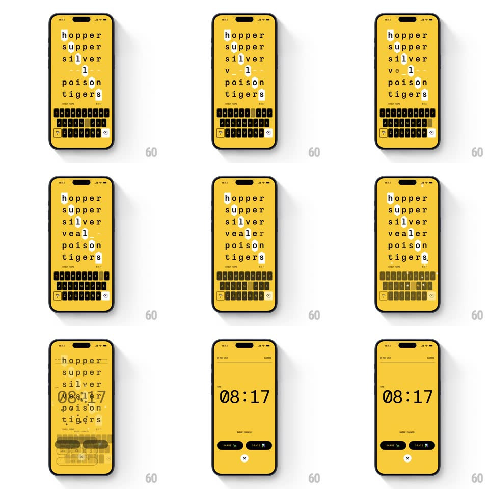

Media
Frame-by-frame

Rebuild this animation 1:1: Sixtep's game-complete moment - the word grid solves, confetti bursts across the yellow board, and the result screen lands with the solve time, Share, and Stats.

Rebuild this animation 1:1: Sixtep's game-complete moment - the word grid solves, confetti bursts across the yellow board, and the result screen lands with the solve time, Share, and Stats. ## Integration Integration: stack-agnostic spec - springs given as stiffness/damping, timed motions as duration + curve; map every value to your framework and animation library of choice. ## Scene A bold yellow word game: a list of target words (hopper, supper, silver, vealer, poison, tigers) with a letter cursor, a dark QWERTY keyboard whose keys wear green check ticks as words land, and a utility row (trophy, hint, stats, settings). Complete state: the same yellow field cleared to the solve time "08:17" in large type, with Share and Stats pill buttons and a close X. ## Motion spec Pattern: completion confetti burst over a cleared board into a minimal result state. - As the final word's last letter lands, its row pops (scale 1 -> 1.08 -> 1, 250ms) and the keyboard's matching keys flip to their solved state (rotateX flip, 300ms, staggered left to right 30ms). - A beat later (150ms) confetti fires from the solved word outward: ~60 paper squares in the yellow-black palette (plus white), gravity-driven with rotation, 900ms life, falling past the keyboard. - The word list and keyboard then scatter-fade (rows drift down 20px and fade, staggered 40ms, 300ms) clearing the board. - The result state builds center-out: "08:17" scales from 0.9 with a soft spring (~340/18), then Share and Stats rise as pills (24px, 280ms, 80ms apart), the X fades in last. - The yellow never changes - the whole transition happens inside one saturated field. ## Calibration - Confetti is paper-flat (2D squares with flip), no metallic particles - it matches the print-like UI. - The solve time uses a monospace-leaning tabular face so the digits sit dead stable. ## Reduced motion No confetti; the board fades out and the result fades in (300ms). ## Don't miss - Share leads Stats - sharing the solve is the primary exit. - The keyboard's solved keys keep their green ticks through the scatter - the proof of the solve leaves last.